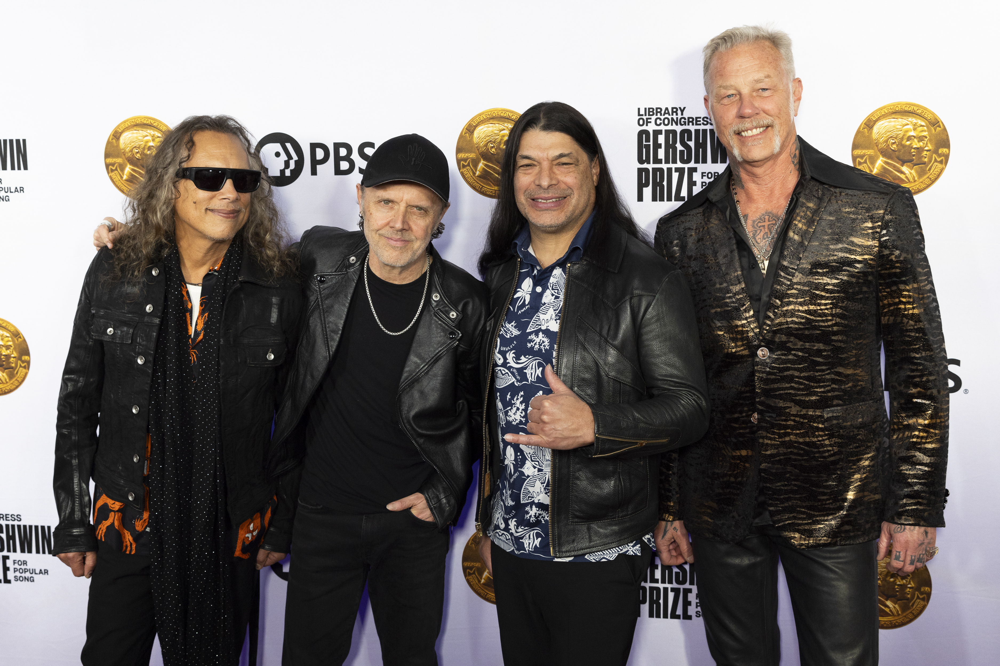
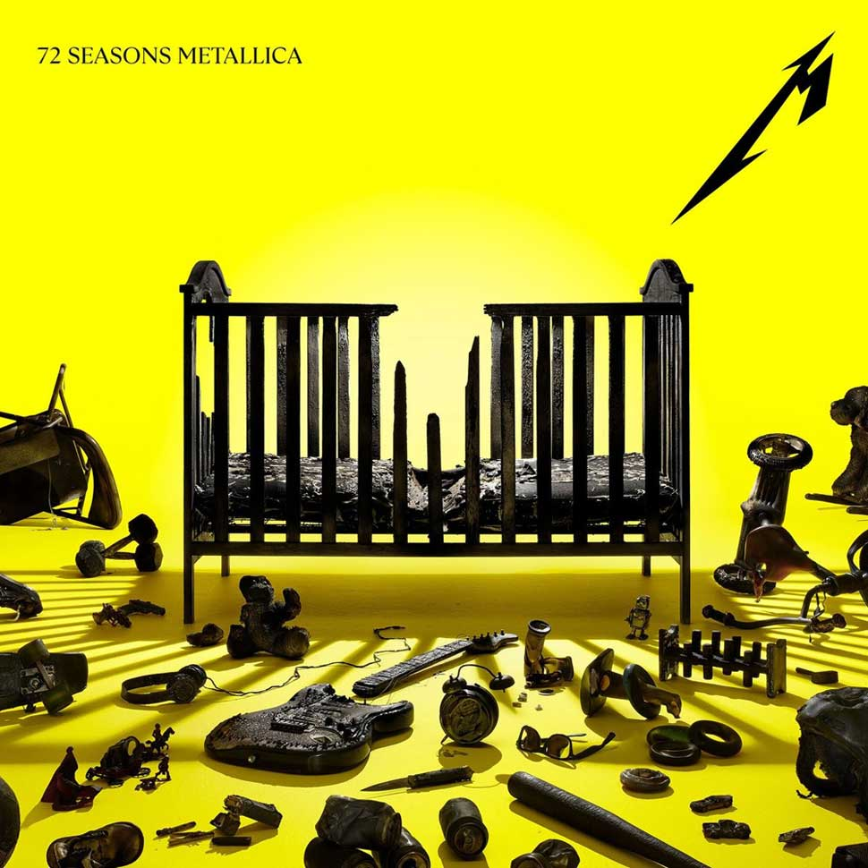

72 Seasons
Ja pots escoltar el darrer treball de la banda, amb dotze temes nous.


L'onzè àlbum d'estudi de Metallica, amb dotze cançons que miren enrere cap als primers anys de vida i com ens marquen.
Veure la discografiaJa pots escoltar el darrer treball de la banda, amb dotze temes nous.
Dos concerts per ciutat, cadascun amb un repertori diferent.
Veure concertsEl primer avanç de 72 Seasons, ideal per començar a escoltar l'àlbum.